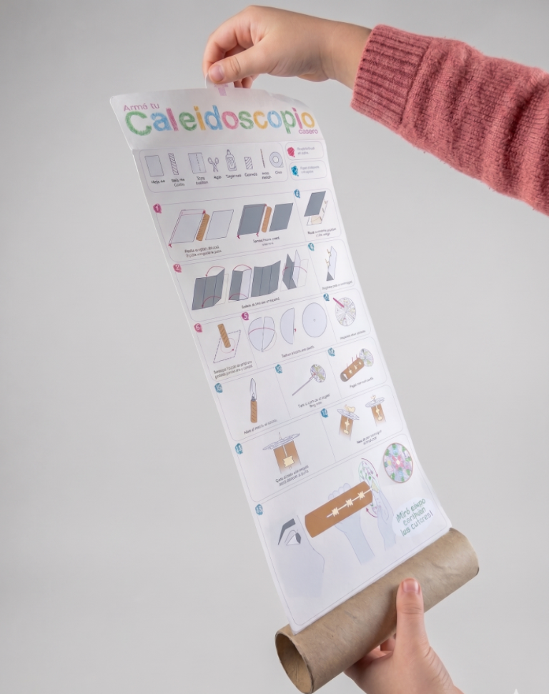
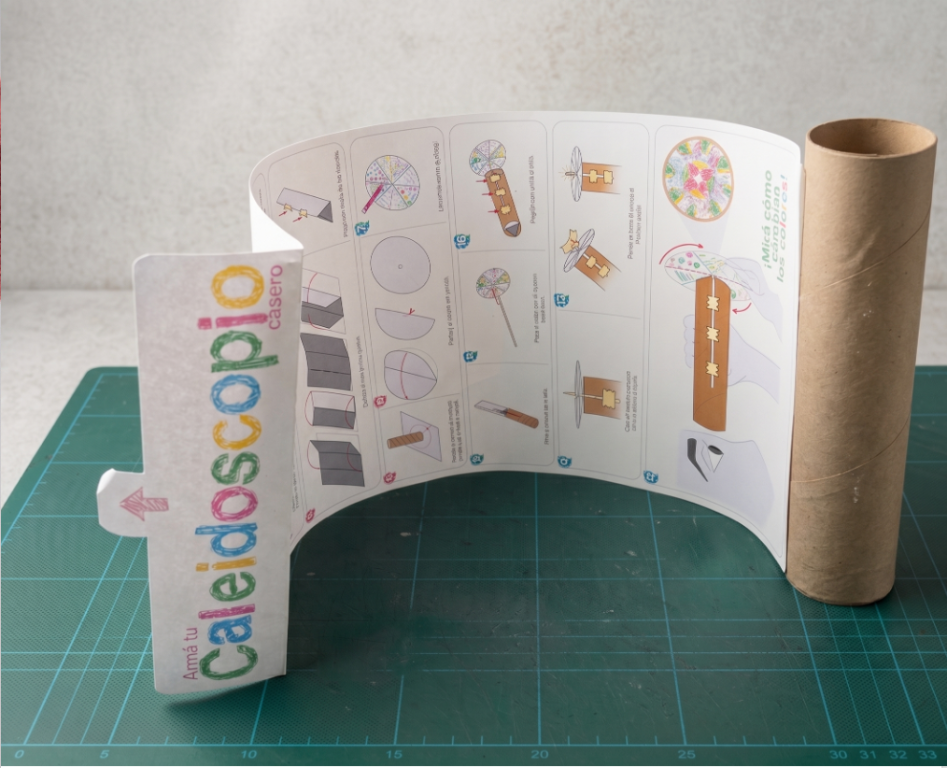
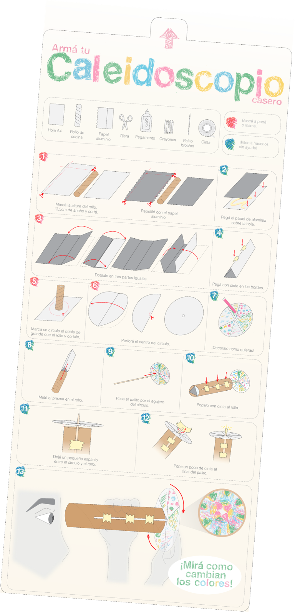

Diseño de Información e Ilustración
Caleidoscopio Casero
Sobre el proyecto
Una gráfica instructiva
Una gráfica instructiva orientada a infancias cuyo formato envuelve un rollo de cocina convencional y revela el instructivo paso a paso al agotarse el papel.
El instructivo paso a paso

